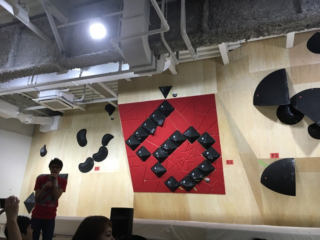

5.10CUP2016@荻窪 振り返り

参加してきました。 THANKS FOR 5.10！！！ | B-PUMP 荻窪店ニュース
人生に2度目のコンペ。ミドルクラスに出場し、全30課題中18完登19ボーナスで83人中25位という何とも言えないけど、これが実力だよなと思える結果でした。以下駄文。
できた点できなかった点
- 時間配分: ○
- ほぼ全課題を触ることができた。
- 体力: ×
- Rocklandsで10課題あるうち、5課題ぐらいでスタミナ切れしたのが残念。ないならないなりにできそうな課題に集中すればよかった。
- 技術: ○
- 基本的なムーブはできていた。しいて言えばパワームーブがもっとできたら完登数が稼げた。
- 集中力: △
- Rocklandsで集中力が下がってしまったのが残念。それ以外は○。
- オブザベ力: ○
- 前の人のムーブをしっかり見てできた。自分がやった時に感じた差異をもっと柔軟にできればよかった。
- 休憩時間の過ごし方: △
- 基本的にはOKだったが、パワーとスタミナがいるRocklandsに行く前にバナナで栄養補給すべきだった。
- まわりを味方につけること: △
- 秋パンの常連さんが声がけしてくれて少し気楽に登れた。しかしジャッジを早く味方につけて1壁目をフルにできるようにしたり、マスターエキスパートの強いひとにムーブを聞いたりするとかもっとやりようはあった。
コンペで勝つために
ジムの常連(強いマー)さんたちとの完登数の差は3,4課題だけどそこに大きな差がありそうな気がする。
- 普段3Q2Qを一撃ないし3トライ以内で仕留められるかどうか。
- RPできるかどうかの課題に対しての取り組み方はどうか。
- 本気トライした後の追い込み方はどうか。
- 技術云々もそうだけどフィジカルはどうか。
- 落ちそうな時に身体全体でこらえて止めて、登りきれるかどうか。
- 苦手をなくしているかどうか。
- バラシでは行けてもつなげると体力なくて核心部で落ちてないかとか。
これからの課題
三点保持の徹底。
- 剥がれやすい垂壁、スラブ系の課題でしっかり耐えて、良い保持ポイントを探し当てること。
手が悪いところ、パンプしてる中での保持力。
- 少し勢いがある状態でカウンターで第一か第二関節くらいでかけにいく時の安定感、勢いの殺し方。
レストの技術。保持が悪い中でどれだけレストできるか。
強傾斜や、身体が真横になるような姿勢でパワームーブをもっとできるようにする。
-ダイナミックムーブもそこそこできていたが、その後支えるパワーが足りず次のムーブに繋げられなかった課題があった。
省エネムーブを極める。
- 垂壁、スラブでもパンプしてる状態で第一関節ぐらいまでで保持していく課題の場合しっかりと身体を支えられず落ちるので。
- 強傾斜でもすいすい登れるようにガバホールドで練習すべき。一手一手しっかり保持しようとするのはいいが、5Q6Qと2Q3Qで動きが同じになってる。
課題克服のために
- 強傾斜: 週1回はインターバルトレーニングを実施。2～3時間緩&強傾斜ばっかりやる。普段時も追い込み用として30分は実施。
- 一撃: 新しい課題ができた時は3トライ以内で落とすために集中して取り組む。その際できるだけ粘ってやる。
- 強難易度: 体力満タン”なら”落とせる2Q3Qというのを減らしていく。特に3Qを1～2分のインターバルで3回連続で落とす。
- その日の本気トライが終わったら落としたことのある2Q3Qを3トライ以内で落とすという意気込みで片っ端から触っていく。
- 最高グレードを上げるためにしていること｜ボルダリング 目指せ！初段！ も参考に。
私的マークアップ言語編集環境
基本的には標準のVimセットで事足りるのだけど、バリバリ書こうとすると「コレ欲しいな」ということがあったので整理してみる。 dotfilesはこちら 。
一応 riv.vim というオールインワンなプラグインがあるのだけど、いかんせん重いし、勝手に折りたたみが入ったりとデフォルトの設定がなじまないので個別に上げてます。
前提
- エディタはVim
- restructuredtextメインだがmarkdownもちょっと書く
共通
補完、スニペット
説明不要。設定は基本ドキュメントに書いてあるものをそのまま使わせてもらっている。
コメントアウト
気軽にコメントアウトと解除をするため以下の設定をvimrcに記述。
" \cで行の先頭にコメントをつけたり外したりできる
nmap <Leader>c <Plug>(caw:i:toggle)
vmap <Leader>c <Plug>(caw:i:toggle)
マークアップ言語専用
プレビュー
reStructuredTextだけでなく、Markdownでも使える。自分は以下をvimrcに設定している。 :PreVimOpen で普段使っているブラウザでリアルタイムプレビューできる。
# reStructuredTextをプレビューするにはdocutilsは必須。
# pygmentsはreStructuredTextでSyntaxHighlightを有効にするのに使用。
$ pip install docutils pygments
$ rst2html.py --version
rst2html.py (Docutils 0.12 [release], Python 2.7.5, on darwin)
" ヘッダー情報を表示させない。
let g:previm_show_header = 0
" vimproc使用時にでるエラー抑制する。
let g:previm_disable_vimproc = 1
" 拡張子をmarkdownとして認識させる。
augroup PrevimSettings
autocmd!
autocmd BufNewFile,BufRead *.{md,mdwn,mkd,mkdn,mark*} set filetype=markdown
augroup END
自動見出しレベル設定
お好みで見出しに使用する文字をvimrcに設定。詳しくは Re: reStructuredText のヘッダを書く - 永遠に未完成 を参照のこと。
" \h+数字で見出しを設定できる。
let g:rst_header_chars = '#*=-^~"'
テーブル記述
あまり使っていないのだけど新しくテーブルを作ったり、テーブルのカラムを直したりするのに便利。 RST-Tables がオリジナルだけど、こちらは Python3 対応してないのと、 RST-Tables-CJK もいくつの言語で動かないとかでこっちを使うのが良さそうだ。
あとがき
基本みんな普段自分が使っているエディタを使っていることが多いと思うのでそのまま使えばいいと思ってる。良さそうだなと思ったら参考にしてもらえたら幸いだ。
Emacsなら rst-mode があるし、SublimeText、Atom、VSCode、サクラエディタ(!?)でもプラグインを入れるとSyntaxHighlightなり、補完・スニペットなりが効くらしい。
WindowsでGolang開発環境構築
Golangインストール
インストーラー をダウンロードしてインストール(C:Go)
環境変数設定
以下の環境変数を追加
| GOROOT: | C:\Go |
|---|---|
| GOPATH: | C:\Go\goprojects |
| PATH: | %GOROOT%\bin;%GOPATH%\bin |
GOROOTはGolangをインストールした場所、GOPATHはユーザーのワーキングディレクトリ(好きな場所で良い)を指定。
セットアップできたら動作確認をする。
$ go version
go version go1.6 windows/amd64
Vim設定
GolangはAtom, Eclipse, Emacs, Gedit, IntelliJ IDEA, LiteIDE, Notepad++, SublimeText, VisualStudio(Code)と様々なエディタ、IDEでサポートされていますが、ここではVimを使います。
インデントの設定
Golangはハードタブなのでvimrcに下記を設定 ~/.vim/after/ftplugin/<filetype>.vimに書くことでFileTypeごとの設定を記述できる．
" .vim/after/ftplugin/go.vim
set noexpandtab
set tabstop=4
set shiftwidth=4
set softtabstop=4
わざわざファイルを新しく用意するのが面倒という人はvimrcに以下のように書くといい。記述している内容は一緒だ。
" vimrc
autocmd FileType go setl ts=4 sw=4 sts=4 noet
プラグイン導入
fatih/vim-go をお好みのPluginManagerでインストール(ここでは Shougo/dein.vim を使用)
" vimrcに記述する場合
call dein#add('fatih/vim-go', {'on_ft': 'go'})
# tomlに記述する場合
[[plugins]]
repo = 'fatih/vim-go'
on_ft = 'go'
コード補完やSyntaxHighlightを有効にするには下記をvimrcに記載するのをお忘れなく。
" vimrc
filetype plugin indent on
syntax on
設定ファイルに記述しプラグインをインストールしたら、vimのコマンドラインより下記のコマンドを叩く。
:GoInstallBinaries
2016-05-16時点でfatih/vim-goを導入すると下記がインストールされる。
- asmfmt.exe
- errcheck.exe
- gocode.exe
- godef.exe
- gogetdoc.exe
- goimports.exe
- golint.exe
- gometalinter.exe
- gorename.exe
- gotags.exe
- guru.exe
- impl.exe
- motion.exe
- oracle.exe
自分のvimrcをご覧になりたい方は こちら
Hello, Golang World!
プログラムを書いてみる。 コード補完(<C-x><C-o>)やリントツール、フォーマッタなど豊富なサポートが得られることが確認できる。
package main
import "fmt"
func main() {
fmt.Printf("Hello, Golang world!\n")
}
$ go run hello.go
Hello, Golang world!
おまけ
よくag(the_silver_searcher)を使ってgrepを高速実行しようという記事が見受けられるが、ここではGolang製の mattn/jvgrep を使ってみる。 動作が高速でマルチエンコーディングに対応しており、Windowsでのインストールも簡単なので入れておいて損はない。
$ go get github.com/mattn/jvgrep
" vimrcに記述
if executable('jvgrep')
set grepprg=jvgrep
endif
Shougo/unite.vim のgrep処理でもjvgrepを使用できるよう設定できるので、興味がある人は設定してみるといいかもしれない。
" vimrcに記述
if executable('jvgrep')
let g:unite_source_grep_command = 'jvgrep'
let g:unite_source_grep_default_opts = '-i --exclude ""\.(git|svn|hg|bzr)""'
let g:unite_source_grep_recursive_opt = '-R'
endif